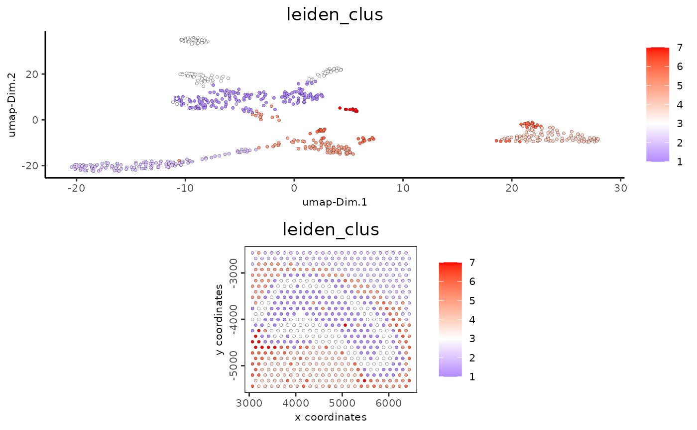

Visualize numerical features of cells according to spatial AND dimension reduction coordinates in 2D
Arguments
- ...
Arguments passed on to
spatDimCellPlot2Dplot_alignmentdirection to align plot
cell_annotation_valuesnumeric cell annotation columns
sdimx= spatial dimension to use on x-axis
sdimy= spatial dimension to use on y-axis
spat_point_shapeshape of points (border, no_border or voronoi)
spat_point_sizesize of spatial points
spat_point_alphatransparency of spatial points
spat_point_border_colborder color of spatial points
spat_point_border_strokeborder stroke of spatial points
dim_show_cluster_centershow the center of each cluster
dim_show_center_labelprovide a label for each cluster
dim_center_point_sizesize of the center point
dim_center_point_border_colborder color of center point
dim_center_point_border_strokestroke size of center point
dim_label_sizesize of the center label
dim_label_fontfacefont of the center label
spat_show_cluster_centershow the center of each cluster
spat_show_center_labelprovide a label for each cluster
spat_center_point_sizesize of the spatial center points
spat_center_point_border_colborder color of the spatial center points
spat_center_point_border_strokestroke size of the spatial center points
spat_label_sizesize of the center label
spat_label_fontfacefont of the center label
dim_edge_alphacolumn to use for alpha of the edges
spat_show_networkshow spatial network
spatial_network_namename of spatial network to use
spat_network_colorcolor of spatial network
spat_network_alphaalpha of spatial network
spat_show_gridshow spatial grid
spatial_grid_namename of spatial grid to use
spat_grid_colorcolor of spatial grid
dim_other_point_sizesize of not selected dim cells
spat_other_point_sizesize of not selected spat cells
spat_other_cells_alphaalpha of not selected spat cells
coord_fix_ratioratio for coordinates
dim_background_colorbackground color of points in dim. reduction space
spat_background_colorbackground color of spatial points
vor_border_colorborder colorr for voronoi plot
vor_max_radiusmaximum radius for voronoi 'cells'
vor_alphatransparancy of voronoi 'cells'
gobjectgiotto object
spat_unitspatial unit (e.g. "cell")
feat_typefeature type (e.g. "rna", "dna", "protein")
show_plotlogical. show plot
return_plotlogical. return ggplot object
save_plotlogical. save the plot
save_paramlist of saving parameters, see
showSaveParametersdefault_save_namedefault save name for saving, don't change, change save_name in save_param
cell_color_gradientcharacter. continuous colors to use. palette to use or vector of colors to use (minimum of 2).
cow_n_colcowplot param: how many columns
cow_rel_hcowplot param: relative heights of rows (e.g. c(1,2))
cow_rel_wcowplot param: relative widths of columns (e.g. c(1,2))
cow_aligncowplot param: how to align
show_imageshow a tissue background image
gimagea giotto image
image_namename of a giotto image or multiple images with group_by
largeImage_namedeprecated. Use
image_namespat_enr_namescharacter. names of spatial enrichment results to include
dim_reduction_to_usecharacter. dimension reduction to use
dim_reduction_namecharacter. dimension reduction name
dim1_to_usenumeric. dimension to use on x-axis
dim2_to_usenumeric. dimension to use on y-axis
dim_point_shapepoint with border or not (border or no_border)
dim_point_sizesize of points in dim. reduction space
dim_point_alphatransparancy of point in dim. reduction space
dim_point_border_colborder color of points in dim. reduction space
dim_point_border_strokeborder stroke of points in dim. reduction space
show_NN_networklogical. Show underlying NN network
nn_network_to_usecharacter. type of NN network to use (kNN vs sNN)
nn_network_namecharacter. name of NN network to use, if show_NN_network = TRUE
gradient_midpointnumeric. midpoint for color gradient
gradient_styleeither 'divergent' (midpoint is used in color scaling) or 'sequential' (scaled based on data range)
gradient_limitsnumeric vector with lower and upper limits
select_cell_groupsselect subset of cells/clusters based on cell_color parameter
select_cellsselect subset of cells based on cell IDs
show_other_cellsdisplay not selected cells
other_cell_colorcolor for not selected cells
show_legendlogical. show legend
legend_textsize of legend text
legend_symbol_sizesize of legend symbols
axis_textsize of axis text
axis_titlesize of axis title
See also
Other spatial and dimension reduction cell annotation visualizations:
spatDimCellPlot2D()
Examples
g <- GiottoData::loadGiottoMini("visium", verbose = FALSE)
spatDimCellPlot(g, cell_annotation_values = "leiden_clus")
